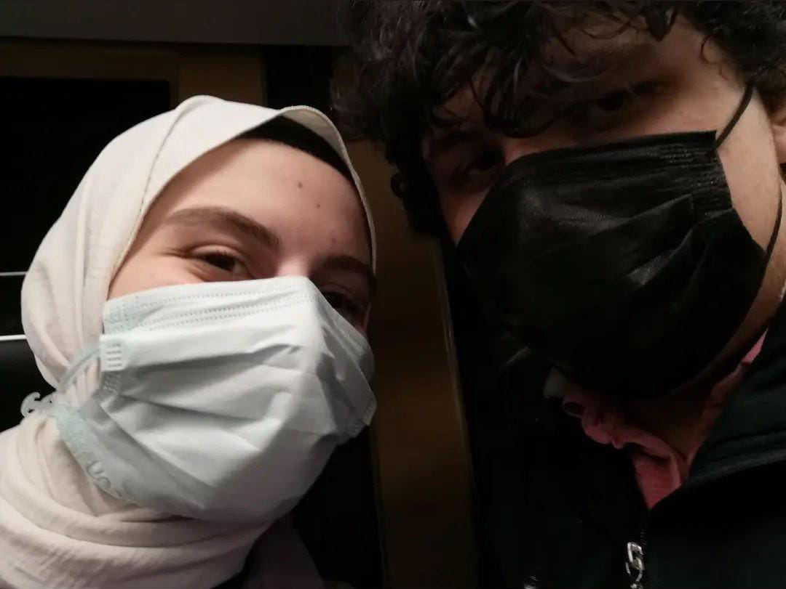
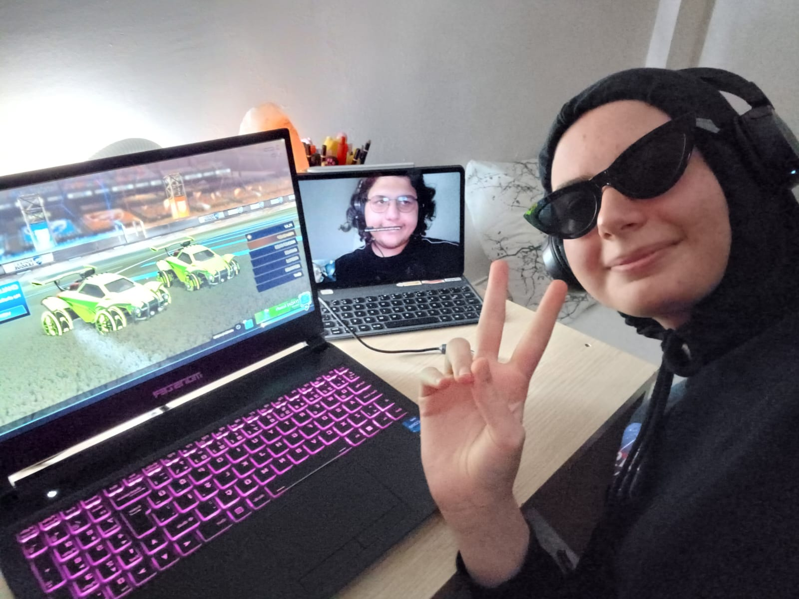
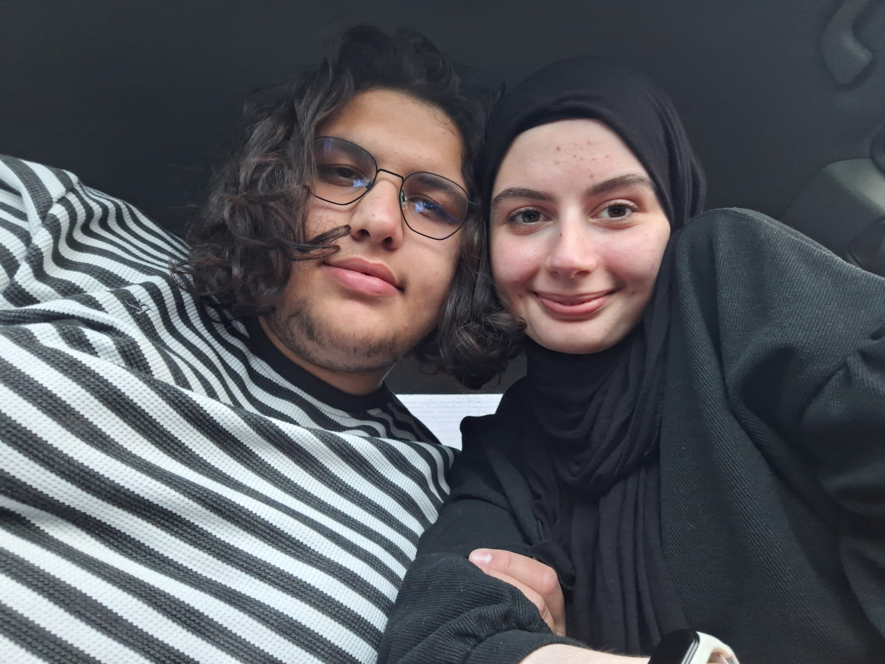

Hayatımın En Güzel Anları
You’re exactly the way I remember you in my dreams
Hikayemizin Başı
Her şey böyle başladı. İlk başta sadece birbirine karşı bir şeyler hisseden 2 "arkadaştık". Birbirimize karşı hislerimizi saklayıp hayatımıza devam etmeye çalıştık. Ama ikimiz de daha fazla böyle devam edemeyeceğimizi biliyorduk. Aynı Anakin ve Padme gibi. Yaşamamamız gereken yasak bir aşk yaşıyorduk resmen. Bu hislerimi uzun zamandır saklamaya çalıştım ama sana olan sevgim o kadar büyüdü ki artık içimde tutamayacak duruma geldim.
Tek Kaldığımız Zamanlar
Seninle ne zaman tek kalsam o ihtimali düşünüyordum. Ya sana hislerimi açıklayabilseydim. Senin bana her temasında, her bakışında içimi bir volkan gibi patlatasım geliyordu. Gerçekten bir yerden sonra seninle her buluştuğumda ne kadar mutlu olsam da imkansız görünen hayallerim içimi parçalıyordu.
24.12.23
Ve geldik o malum geceye. İçimin bir çocuk gibi kıpır kığır olduğu ve çok korktuğum geceye. Senin bana içimden bir mermi gibi geçen o cümleyi söylediğin geceye. O saatlerce konuşmalarımız susuzluktan ölmek üzere olan bir insanın son anında su bulup, o suyu kana kana içmesi gibiydi. O kadar rahatladım ki... Sanki içimdeki yaralar birer birer kapanıyordu ama bekle demen hiç hoş değildi >:( O geceye ait bir fotoğrafımız yok ama 1-2 gün sonrasında çektiğimzi bir fotoğrafı koymak istiyorum.
First Date
Seni almaya gelirken aklımdan yüzlerce şey geçiyordu. Acaba bu bir oyun olabilir miydi? Beni denemek için miydi bütün bunlar? Overthinklemekten kafayı yiyecektim. Bu düşüncelerimin tek sebebi ise seninle sevgili olmanın düşüncesinin ne kadar gerçeklikten uzak olduğunu düşünmemdi. Her şeye rağmen karnımda kelebekler açar bir şekilde seni aradım. Sen arabaya bindikten ve elimi tuttuktan sonra kafamı kurcalayan sis bulutu ortandan kalkmıştı. Dünyanın en mutlu ve şanslı adamı bendim artık. Benim sırtımı kimse yere getiremez, kimse beni üzemez diye düşünüp durdum kendimce.
Dünyanın En Mutlu Adamı
Date üstüne date'e çıktık. Hatta 5 kere üst üste. Birbirimizi o kadar özlemiştik ki o bile yetmemişti O zamanlar bunun bize yeteceğini düşünüyorudm ama çok yanıldım. Şimdi senden 1 günü bırak 1 saat bile ayrı kalsam özlemim devam ediyor. Sana yaklaştıkça sana olan hasretim daha da büyüyor. Hayatımın her saniyesinde seninle beraber olmak istiyorum.
The Best Couple In The Universe
Seninle birebir zaman geçirmek beni çok değiştirdi. Sen beni, sadece kendimi düşünen, başka insanlara
karşı soğuk kalkan çekmiş bir adamdan, hislerini ve düşüncelerini korkamdan paylaşabilecek birisine dönüştürdün.
Biz ne yaparsak yapalım en iyisini yaptık. Biz bu galaksideki en iyi çiftiz.
CANNOT CHANGE MY MİND!
Şoförlayda
Sana araba kullanmayı öğretirken çok mutluydum. Hem bir konuda ilkin olacaktım hem de senin "Kadınlar araba kullanamaz!" algısını kıracağını biliyordum. Daha ilk günden çok düzgün kullanmaya başlamıştın. O gün girseydin bile sınavı geçebileneceğine inanmıştım. Sadece stres ve öfke kontrol sorunların vardı onun dışında çok güzel sürüyordun. Şu an hala sen araba kullanırken gururlanıyor ve o zamanlarını hatırlıyorum. Ne kadar yol geldiğini düşünmek bile gözlerimi yaşartıp gülümsetmeye yetiyor.
Aynı Biz!
Bu kozalakları zaten hatırlıyorsundur. Doğada bile "Aynı Biz!"" diyebileceğimiz şeyleri bulmak ne kadar güzel bir çift olduğumuzu kanıtlıyor bence.
Evim
Bir insanın güvende ve evinde hissetmesi için illa 4 duvar ve çatı arasında sıkışmasına gerek yok.
Ben senin yanındayken huzurlu ve evimde hissediyorum. Senin ellerinde yarım saat uyumak bile bütün
hayatımın boyunca uyumalarıma bedeldi. Uyandığımda yine senin o güzel yüzünü görüp uyamak kadar tatlı bir his yok bu dünyada.
Sen neredeysen benim evim de hep orada olacak.
SENİ SEVİYORUM.
Minik Corollamız
Aslında bu fotoğraftada yazıdan çok fotoğraf duyguyu veriyor. Minik corollamızla bir sürü maceralara atıldık.
İster uzun yol, bazen yük taşıma, istediğimiz yere varma. Senin de bildiğin gibi corollamız bize minik bir ev oldu.
İyi ki varsın minik corolla!
♫Çık Çık Çık Çık İlayda Mezunn♫
Senin mezuniyetine katıldığımda çok değişik hissediyordum. Seni sanki ben büyütmüşüm de böyle yuvadan kuş uçuruyormuşum gibi... Neden böyle hissediyorum hala anlamıyorum ama o sahnede seni görüp plaketini almanı izlemek çok gurur vericiydi. Sen sıranı beklerken seninle bakışıp birbirimize attığımız öpücükler, o minik bakışmalarımız hala hepsini dün gibi hatırlıyorum. Minnoş kızım benim. Allah akademik yolunu daha da açık etsin.
Star Wars Date
Bu siteyi de yaparken de esin kaynağım olan Star Wars'u izlemeye gittiğimizde. Benim için yeri büyük olan bir seriyi seninle beraber ilk kez sinemada izlemek adeta rüya gibiyi. Senin bu seriyi benimle izlemiş olman da ayrıca mutlu ediyor beni. Bugün kombinlerimiz de Yoda ve Vader'dan esinlenmişti. Galaksinin en iyi çifti olduğumuz yetmiyor bir de en iyi geekleri olacağız galiba.
Edirne Yolcusu Kalmasınnn
Timeline biraz karıştı biliyorum aşkım :p Ama bunu ben de birsürü fotoğraf arasından seçip yapıyorum. Olabildiğince kronolojik gitmeye çalıştım. En azından odamdan daha toplu oldu :D Edirne yolcuğumuz çok güzeldi. Her ne kadar orada aradığımzı bulamasak ve ekşi suratlı kardeşlere sahip olsak da biz yine mutlu ayrılabildik. Bugün bir kez daha anladım ki mutlu olabilmek için yerden çok seninle olmak benim için daha önemli.
Sarı Çiçekler
Bu zamnalarda anlamadığımız şekilde her yerde bunlardan vardı. Biraz geç oldu sana o çiçekleri vermem ama verdiğim için mutluyum.
Sporcu Mulos
Uzun zaman sonra ilk kez seninle basket oynamıştım. Benim için bir zamanlar hayatımın yapmayı en çok sevdiğim aktivitesi olan basketi bir de senle oynamak çok güzel hissettirmişti. Umarım bir daha çıkabiliriz.
Pedal to The Metal
Beraber bisiklet sürmek en çok zevk aldığım aktivitelerden biri haline geldi. Bisiklet sürmeyi zaten seviyordum ama seninle yapıp hiç bisikletle geçmediğim yerlerden seninle geçmenin keyfi çok ayrı. Yazarken şunu fark ettim ki ben uzun zamandır yapmadığım şeyleri tekrar seninle yapmışım. İyi ki de yapmışım. Çocukluğumdan bile daha çok keyif alıyorum. Teşekkürler bebişş.
Son Söz
Bu siteyi aslında dijital günlüğümüz yapmayı planlıyordum ama daha çok sana içimi dökme sitesi oldu. Seninle yaşadığım her şey, bu simsiyah boşlukta parlayan birer ışık gibi. Beni kaybolmaktan koruyor ve yol gösteriyor. Belki ileride hafızamız bize oyunlar oynayacak ama burada yazanlar hep aynı kalacak. Çünkü bu sayfa, seni ne kadar çok sevdiğimi fısıldayan dijital bir kalp gibi. Sonsuza kadar seninle, sonsuza kadar aynı yıldızların altında yaşamak dileğiyle...